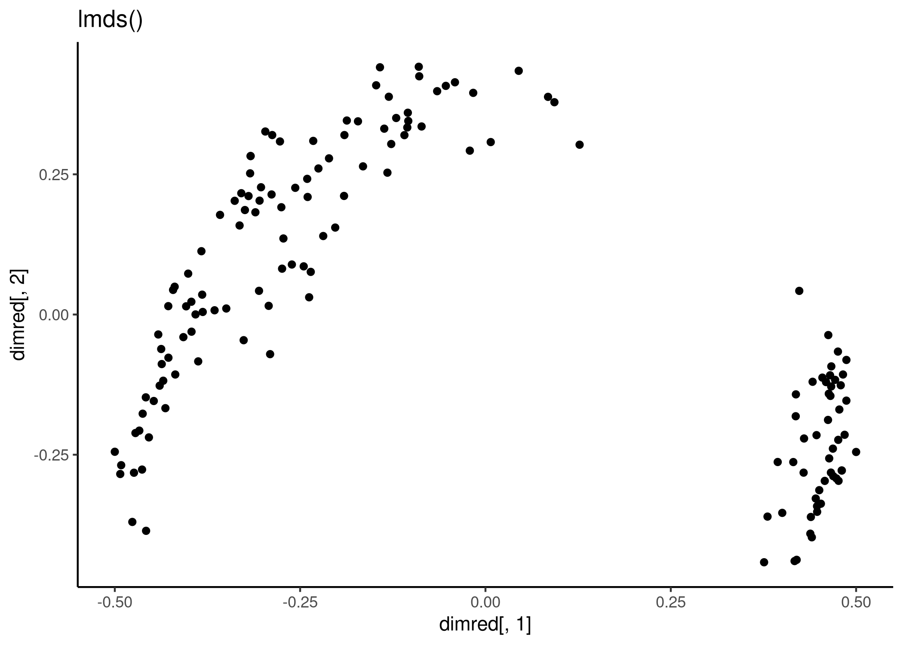
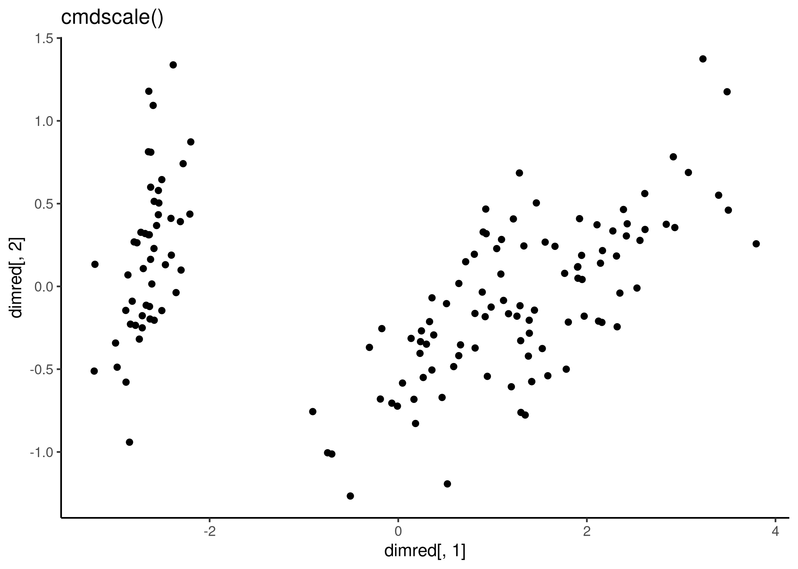
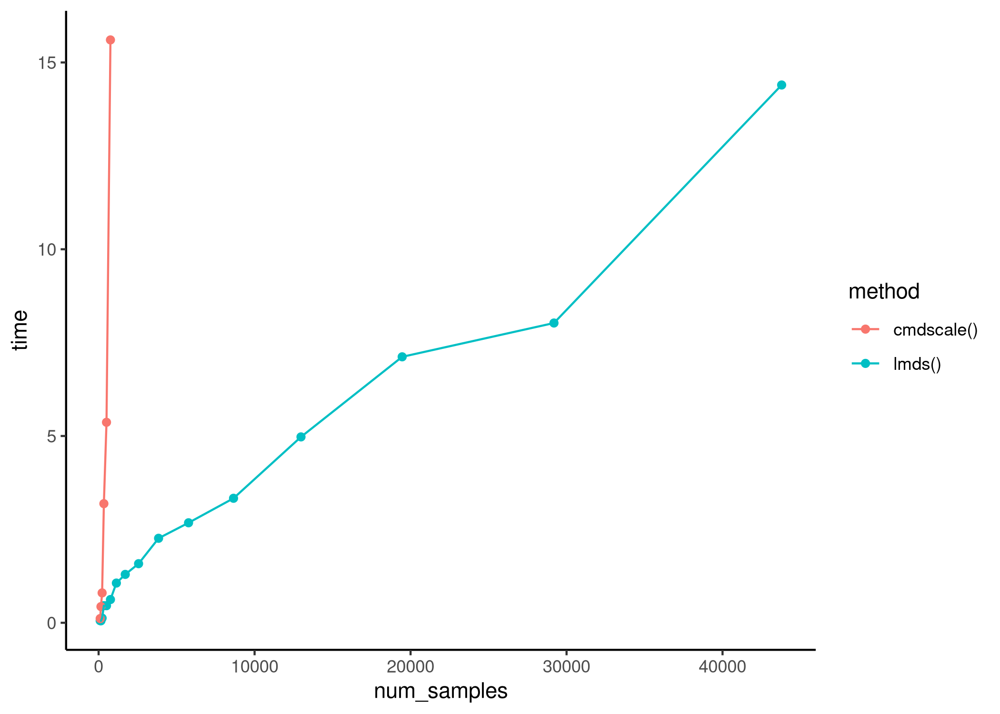

lmds: Landmark Multi-Dimensional Scaling
A fast dimensionality reduction method scaleable to large numbers of samples. Landmark Multi-Dimensional Scaling (LMDS) is an extension of classical Torgerson MDS, but rather than calculating a complete distance matrix between all pairs of samples, only the distances between a set of landmarks and the samples are calculated.
library(lmds)
x <- as.matrix(iris[,1:4])
dimred <- lmds(x, ndim = 2)
qplot(dimred[,1], dimred[,2]) + labs(title = "lmds()") + theme_classic()
#> Warning: `qplot()` was deprecated in ggplot2 3.4.0.
#> This warning is displayed once every 8 hours.
#> Call `lifecycle::last_lifecycle_warnings()` to see where this warning was generated.
dimred <- cmdscale(dist(x))
qplot(dimred[,1], dimred[,2]) + labs(title = "cmdscale()") + theme_classic()
Execution time
The execution time of lmds() scales linearly with respect to the dataset size. 
Latest changes
Check out news(package = "lmds") or NEWS.md for a full list of changes.
Recent changes in lmds 0.1.0
Initial release of lmds.
- A fast dimensionality reduction method scaleable to large numbers of samples. Landmark Multi-Dimensional Scaling (LMDS) is an extension of classical Torgerson MDS, but rather than calculating a complete distance matrix between all pairs of samples, only the distances between a set of landmarks and the samples are calculated.